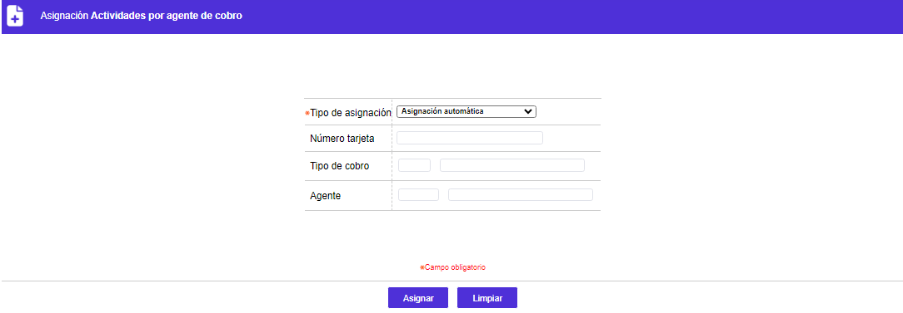

Actividades por agente de cobro
A través de la ejecución de esta opción el sistema asigna el agente de cobro a las diversas obligaciones que han sido registradas para tal fin. La asignación se realiza teniendo en cuenta varios de los parámetros definidos en todo el menú.

El formulario cuenta con los siguientes campos actualizables permanentemente:
|
Tipo de asignación |
Lista de valores con las siguientes opciones: Asignación automática: Al seleccionar esta opción el sistema asigna de forma automática, a todas las obligaciones ingresadas a cobro, el agente responsable de cada una de ellas. Asignación manual sobrecupo / pago mínimo / mora: Mediante estas opciones se posibilita a la entidad asignar de forma manual e individual una obligación que por cumplir con los parámetros establecidos, deba iniciar el proceso de cobranza. Al seleccionar cualquiera de estas tres alternativas se activan los campos que identifican tanto al deudor, como al agente de cobro encargado y el tipo de gestión a seguir. Es de resaltar que estas opciones sólo aplican para obligaciones de tarjetas de crédito. |
|
Número tarjeta |
Campo alfanumérico de 23 posiciones, obligatorio, en el que se registra la cadena de caracteres que identifica la tarjeta a la que se le inició proceso de cobro y se desea asignar. |
|
Tipo de cobro |
Este campo cuenta con lista de valores poblada en la opción del mismo nombre y que permite seleccionar el tipo de cobro a efectuar. |
|
Agente |
Campo con lista de valores poblada en la opción Agentes de cobro donde la entidad puede escoger la persona a quien se desea asignar la gestión de cobro de la obligación. |